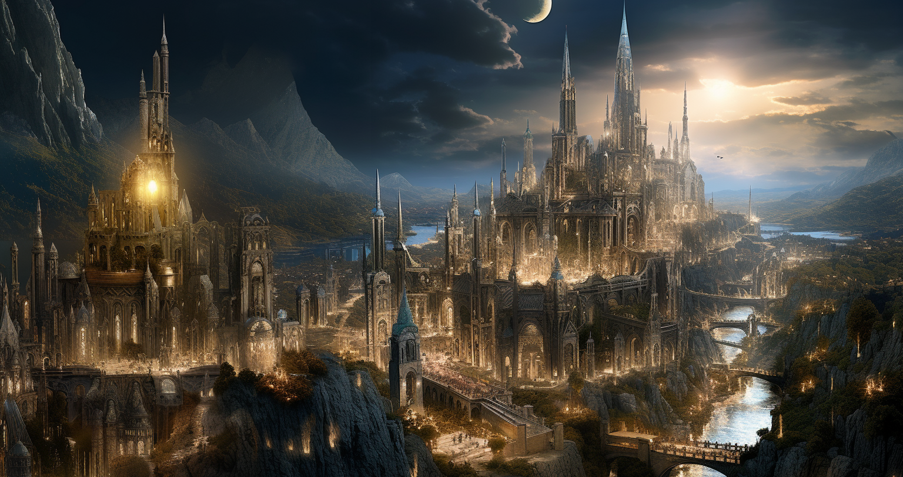

|

Ciudad ElíseaEn el corazón radiante de la Tierra de los Amaneceres se alza la majestuosa Ciudad Elísea, una capital que se yergue como un faro de esperanza en un mundo amenazado por la magia y la noche. Sus imponentes torres se alzan hacia el cielo como testigos de la resistencia contra el Cénit, sus cúspides tocando las nubes en un gesto desafiante ante la noche eterna que se cierne sobre otras tierras. Las calles de la Ciudad Elísea, talladas en piedra resplandeciente, destacan por su arquitectura impecable y su esplendor luminoso. A lo largo de los callejones, la luz de farolas alquímicas iluminan la ciudad, creando un espectáculo nocturno que rivaliza con las estrellas. Cada rincón de la ciudad emana una sensación de seguridad para aquellos que se ciñen a la idea del mundo ideal que tiene Gideon en su cabeza , donde la prosperidad y la justicia son los cimientos que la sostienen. Sin embargo, tras la fachada de esta ciudad resplandeciente se encuentra una verdad implacable: la Ciudad Elísea es la encarnación de un mundo sin magia ni criaturas de la noche. Mientras sus torres tocan las alturas, también simbolizan la ausencia de sombras y la negación de la existencia de aquellos seres que deambulan en las tierras oscuras. La esperanza que emana de la Ciudad Elísea es una luz purificadora, pero a la vez, una negación consciente de la dualidad del universo que yace más allá de sus murallas: El destino de aquellos que van contra sus dogmas, reciben un destino mucho peor que la muerte, y si es una muerte lo que reciben, jamás es una misericordiosa. |
| Galeria |
|---|